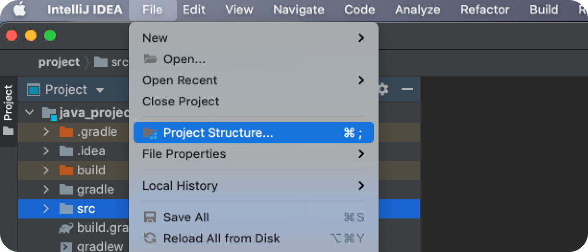
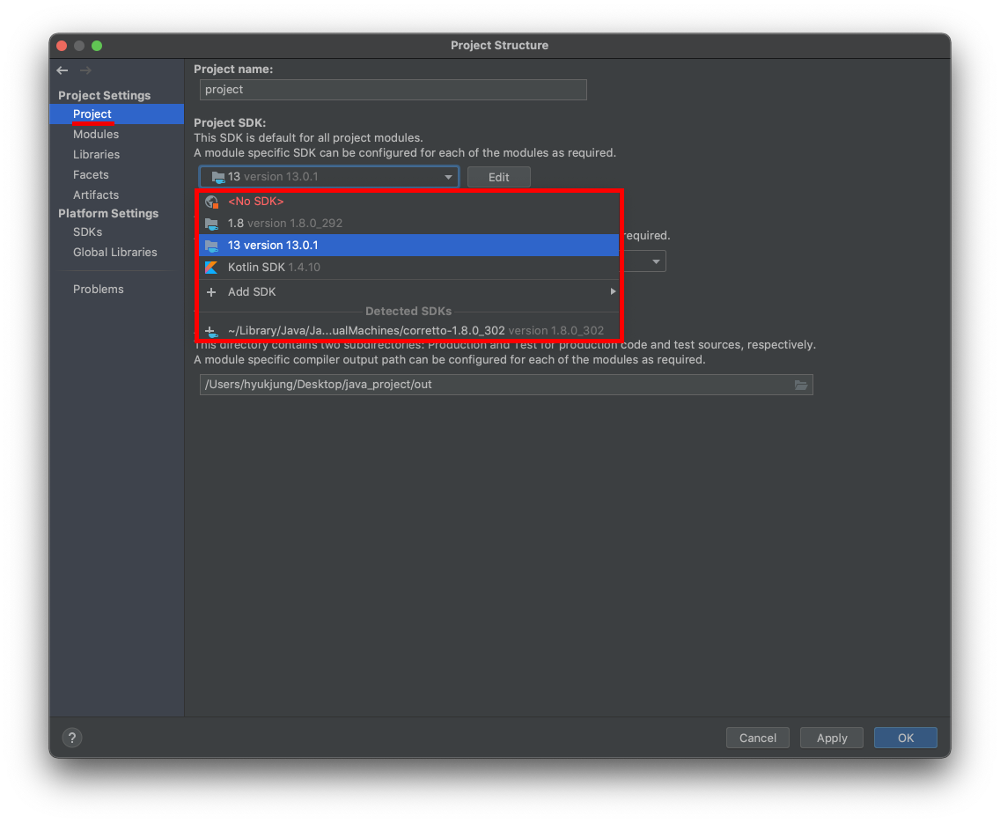

[Java] IntelliJ에서 JDK 버전 변경하기
IntelliJ > File > Project Structure로 이동한다.
Project Settings > Project탭에서 JDK를 변경할 수 있다.

빌드 툴의 JDK를 변경한다. Maven을 사용하는 경우 pom.xml을 다음과 같이 변경한다.
1 | <build> |
Gradle을 사용하는 경우 build.gradle을 다음과 같이 변경한다.
1 | sourceCompatibility = 1.8 // 소스 코드의 Java 버전. 일반적으로 개발 환경에서 사용 중인 JDK의 버전과 일치시킨다. |